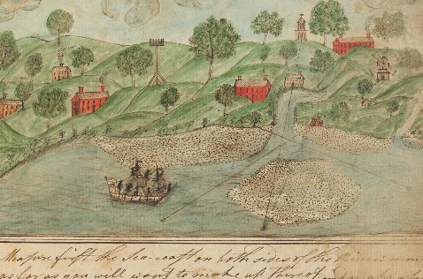

This talk introduces a methodology intended to help you decide:
- When to use programming techniques to visualize your data (and when to choose alternate means, e.g. Excel Pivot Charts);
- What data, or aspects of your data to render visually, and
- How best to use the programming tools at your disposal to visualize your data.
The hands-on programming examples will use JavaScript and emphasize user interactivity, however the decision-framework is language agnostic. Examples will also involve data of interest to library audiences. Topics covered include:
- Workflows
- Developing data analysis and visualization workflows
- Working with data:
- Data structures and data modeling;
- What kinds of library data and circumstances make for good visualization candidates;
- Strategies for working with data from different sources.
- Visual presentation:
- Visualization techniques, what and when to use them;
- Heuristics for creating good visualizations.
A comprehensive Readme file for the code that support the examples is available: here.
About
In June 2012, the Affinity Group Heads were charged with providing the Harvard Library Board with an analysis of the current and likely future state of collection development in institutions of higher education and culture, including best practices and trends based on data gathered internally and externally.
In addition, approximately 105 people attended 8 Harvard-wide community discussion sessions. Additional feedback was gathered from other sources as well, including several affinity group meetings, committee meetings involving members of the Harvard faculty, and online fora. During the community engagement process, participants asked questions and made comments and recommendations about a number of topics pertaining to the draft document.
These examples depict a variety of data pertaining to Drivers, Trends, and Community Engagement collected during the project.
Characteristics
- Original data collected in Word and Excel, then categorized by hand
- Data exported from Excel in TSV
- Data anonymized using Node.js scripts
- Anonymized data written to JSON
- HTML file reads in JSON using AJAX
- Bubble charts: A bubble chart is a type of chart that displays three dimensions of data. Each entity with its triplet (v1, v2, v3) of associated data is plotted as a disk that expresses two of the vi values through the disk's xy location and the third through its size. Bubble charts can facilitate the understanding of social, economical, medical, and other scientific relationships.
- Bar charts: A bar chart or bar graph is a chart that presents grouped data with rectangular bars with lengths proportional to the values that they represent. The bars can be plotted vertically or horizontally. A vertical bar chart is sometimes called a column bar chart.
Examples
- Drivers: visualizations depicting information about drivers of collecting practices
- Trends: visualizations depicting information about trends in collecting practices
- Engagement Data: visualizations depicting comments from the community and others about trends/issues around collecting.
Libraries
The following JavaScript libraries are used in the examples.
- jQuery: a fast, small, and feature-rich JavaScript library. It makes things like HTML document traversal and manipulation, event handling, animation, and Ajax much simpler with an easy-to-use API that works across a multitude of browsers.
- jqPlot: jqPlot is a plotting and charting plugin for the jQuery Javascript framework. jqPlot produces beautiful line, bar and pie charts with many features.
- DataTables: DataTables is a plug-in for the jQuery Javascript library. It is a highly flexible tool, based upon the foundations of progressive enhancement, and will add advanced interaction controls to any HTML table.
- string.js: is a lightweight JavaScript library for the browser or for Node.js that provides extra String methods.
- underscore.js: Underscore is a JavaScript library that provides a whole mess of useful functional programming helpers without extending any built-in objects. Underscore is also available for NodeJS
- Node.js: Console data transformation and output console applications are written in Node.js. Node.js is a JavaScript runtime built on Chrome's V8 JavaScript engine.
About
Project Mission
Mission The on-going, multiyear Colonial North American Project at Harvard University (CNA) makes available, online and free of charge, the riches from Harvard’s vast collections of archival material from the seventeenth and eighteenth centuries. Scattered through 14 repositories, these documents reveal a great deal about topics such as education, trade, finance, and religion in the United States and about the origins of the U.S. itself.
Figure 1: Samuel Griffin, mathematical manuscript, 1783-1784; HUC 8784.353, Harvard University Archives
Background
Between 2011 and 2012, a survey was conducted to gather basic data on the 17th and 18th century manuscripts and archives pertaining to North America in Harvard’s libraries. This work, supported by the Arcadia Fund, was undertaken with an eye to future digitization and towards providing greater accessibility of Harvard’s riches to the world. The survey uncovered 1,654 collections of Colonial-era materials in 12 libraries and archives. Contemporaneously, a project was undertaken and completed to process the collections that were identified at the Harvard University Archives. Following the survey, in-scope collections were discovered at two additional libraries.
Progress to Date
As of April 1, 2016, the Colonial North American Project had digitized 5,956 unique described items (153,319 images, approximately 183,982 pages) from collections at nine Harvard repositories: Andover-Harvard Theological Library, Baker Library, Gutman Library, Houghton Library, Loeb Music Library, the Law Library, Tozzer Library, Countway Library, and the Harvard University Archives.
This current phase of CNA will run from January 2014 to December 2016. Work is continuing at the University Archives, Houghton Library, Andover-Harvard Theological Library, and Baker Library. The project is also embarking upon the processing, stabilization, and digitization of new collections at Schlesinger Library and the Countway Library of Medicine, and other libraries such as the Map Library and the Library of Historical Scientific Instruments having a smaller number of in-scope collections.
Characteristics
- Multiple sources of original data in several formats:
- MS-Access: CNA database containing data about 17th and 18th century manuscript collections compiled by a surveying archivist
- TSV: Tab-delimited output of custom Node.js software program that uses METS files from DRS 1 to generate an inventory of all digital objects associated with the project
- MS-Access: output of database query that combines TSV digital inventory and CNA database
- Complex Node.js console application to process TSV output of MS-Access query and general multiple JSON datasets
- Bar charts: A bar chart or bar graph is a chart that presents grouped data with rectangular bars with lengths proportional to the values that they represent. The bars can be plotted vertically or horizontally. A vertical bar chart is sometimes called a column bar chart.
- Radar charts: (also spider charts) A radar chart is a graphical method of displaying multivariate data in the form of a two-dimensional chart of three or more quantitative variables represented on axes starting from the same point. The relative position and angle of the axes is typically uninformative.
Examples
- Distribution by Date: This plot illustrates the number of unique, significant dates associated with digitized items. For most collections, an interval was identified by the surveyor indicating an earliest and latest date for the collection. Each digitized item will be associated with a date (or date range) somewhere within that interval. This plot does not handle date ranges, but instead assigns a single date (the earliest) for ease of plotting.
- Distribution by Language: This plot shows the frequency of languages associated with collections having digitized content.
- Distribution by Region: This plot shows the frequency of regions identified in the survey associated with collections having digitized content. This visualization uses the HTML5 canvas element.
- Distribution by Subject: This plot shows the frequency of subject areas identified in the survey associated with collections having digitized content. This visualization uses the HTML5 canvas element.
- Distribution by Narrow Subject: In addition to the primary, broad survey subject areas shown above, the surveyor also identified some special, more narrow, subjects as well. This plot shows the frequency of these narrow subject areas identified in the survey associated with collections having digitized content. This visualization uses the HTML5 canvas element and shows some of the limitations of radar charts.
- Google Maps API - Primary Region: Illustration using the Google Maps API of the region data. Requires a Google Maps API key, and therefore may not render properly unless you supply a valid one for your server.
Libraries
The following JavaScript libraries are used in the examples.
- Google Maps API
- jQuery: a fast, small, and feature-rich JavaScript library. It makes things like HTML document traversal and manipulation, event handling, animation, and Ajax much simpler with an easy-to-use API that works across a multitude of browsers.
- jqPlot: jqPlot is a plotting and charting plugin for the jQuery Javascript framework. jqPlot produces beautiful line, bar and pie charts with many features.
- string.js: is a lightweight JavaScript library for the browser or for Node.js that provides extra String methods.
- underscore.js: Underscore is a JavaScript library that provides a whole mess of useful functional programming helpers without extending any built-in objects. Underscore is also available for NodeJS
- Node.js: Console data transformation and output console applications are written in Node.js. Node.js is a JavaScript runtime built on Chrome's V8 JavaScript engine.
- Moment.js: Parse, validate, manipulate, and display dates in JavaScript. Support for Node.js as well as browser-side JavaScript.
- Chart.js: Simple, clean and engaging charts for designers and developers
The OASIS Timeline Viewer is an integrated application using HTML, CSS, and JavaScript that allows the user to choose a finding aid dataset, view its contents along a timeline, view some statistics about the finding aid, and gain direct access to the digital content in the finding aid.
Characteristics
- Data source is CSV output from OASIS
- Dynamically reads CSV file input to generate timeline, statistics, and list of digital components
- Uses a JavaScript library to transform CSV data into format suitable for use with Timeline visualizer and plots
- Makes heavy use of jQuery for user interface elements
Libraries
The following JavaScript libraries are used to implement the OASIS Timeline Viewer.
- jQuery: a fast, small, and feature-rich JavaScript library. It makes things like HTML document traversal and manipulation, event handling, animation, and Ajax much simpler with an easy-to-use API that works across a multitude of browsers.
- jqPlot: jqPlot is a plotting and charting plugin for the jQuery Javascript framework. jqPlot produces beautiful line, bar and pie charts with many features.
- string.js: is a lightweight JavaScript library for the browser or for Node.js that provides extra String methods.
- underscore.js: Underscore is a JavaScript library that provides a whole mess of useful functional programming helpers without extending any built-in objects. Underscore is also available for NodeJS
- Node.js: Console data transformation and output console applications are written in Node.js. Node.js is a JavaScript runtime built on Chrome's V8 JavaScript engine.
- Moment.js: Parse, validate, manipulate, and display dates in JavaScript. Support for Node.js as well as browser-side JavaScript.
- Vis.js: A dynamic, browser based visualization library. The library is designed to be easy to use, to handle large amounts of dynamic data, and to enable manipulation of and interaction with the data. The library consists of the components DataSet, Timeline, Network, Graph2d and Graph3d.